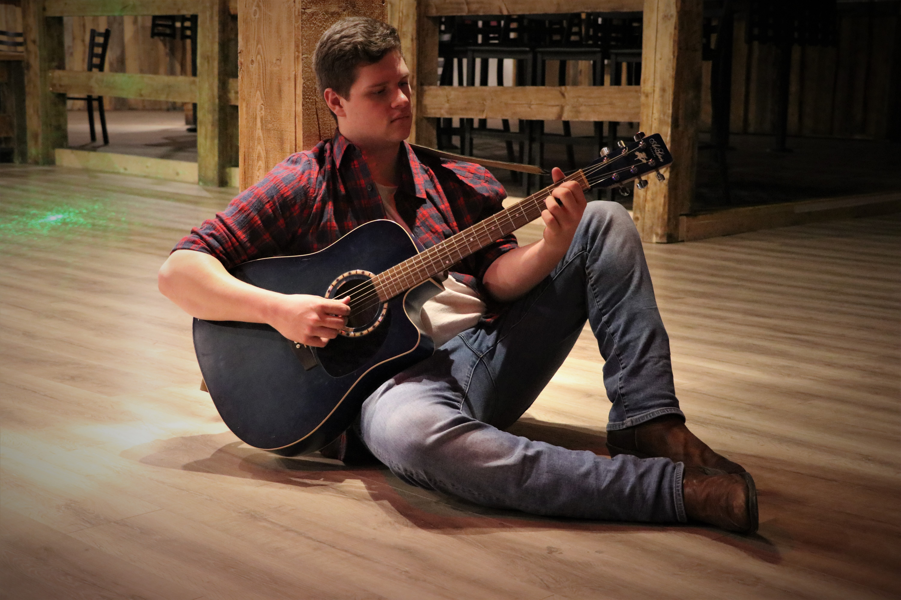

Josh Sadoway
Edmonton, Alberta born and raised is where Josh Sadoway spent most of his days. This 19 year old musician is soon to be studying at the Northern Alberta Instistitute of Technology for Video Game Programming. His day usually involves picking up his twelve-string guitar. Since 2016 he has been adamantly increasing his guitar skills and remains as a self-taught rhythm guitarist. Josh is also known for his campfire musical performances and is excited to branch out and play at more venues throughout Alberta. Since the age of four Josh has been exposed to eighties rock which influences his playing style. Last June he was the acoustic accompaniment for his lead singer for the Kalyna Voice Competition, and is currently accompanying her for Big Valley Jamboree 2017. Josh joined his band "Heartland" last December and hopes to continue his musical journey with them.